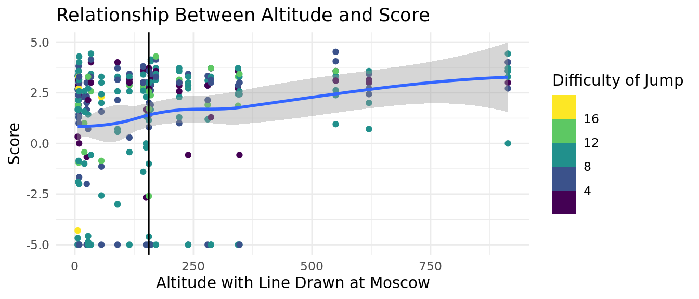
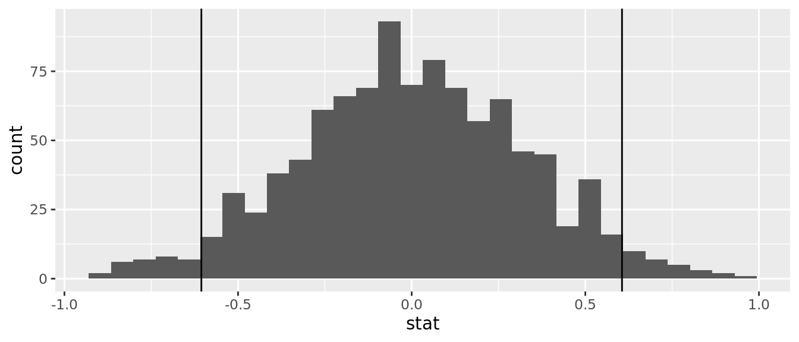
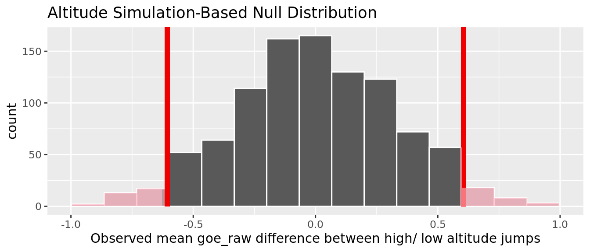
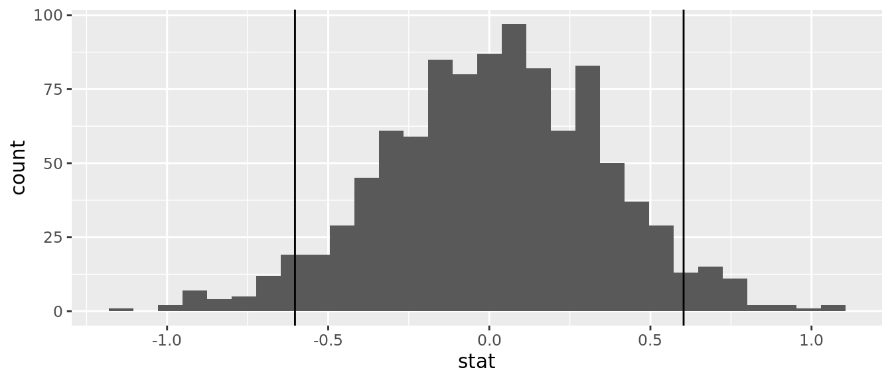
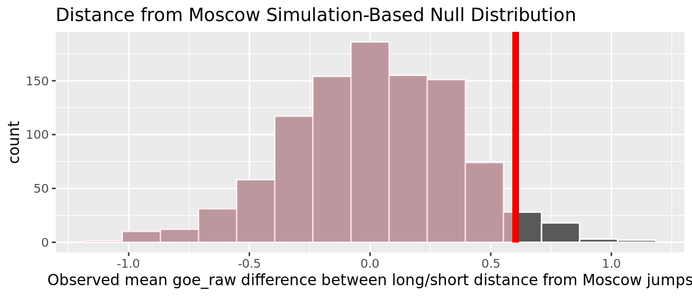

Impact of Select Variables on Trusova’s Jump Execution
Report
Introduction and Data
Introduction
Figure skating is a sport in which athletes complete programs full of jumps, spins, and footwork while making sure to perform to their music. Scoring for figure skating consists of two components, the technical score and the artistic score, and serves as the source of much of the controversy in the figure skating world.
In recent years, women’s figure skating has experienced a “quad revolution” of sorts, with female skaters beginning to perform quadruple jumps with a higher frequency. This has been met with many questions from fans, coaches, and authorities alike. Are quadruple jumps – where the skater rotates four revolutions in the air – valued too heavily? Are they leading to degradation in the performance of other elements?
Literature Review
Little research has been done on the variables that affect a skater’s ability to successfully perform a jump beyond basic biomechanics. A 2006 article presented a study investigating the biomechanical variables affecting the technical success of a jump. The researchers attached markers to anatomical points on the skater’s body, filmed the jump, and conducted analysis in two ways: objectively using biomechanical measures and subjectively by accredited figure skating judges. They found that the correlation between “biomechanical landing strategies” and judge perception is strong enough to support the continuation of the current subjective judging methods in figure skating (Lockwood, Gervais, and Mccreary 2006). However, there are many other factors beyond a figure skater’s biomechanics that affect their jump success. Our investigation seeks to explore these variables.
The Data
One of the skaters that helped bring about the “quad revolution” is Alexandra Trusova, a Russian figure skater whose national and international competitive career spanned from 2014 to 2022. She was the first to perform several types of quadruple jumps in competition, and her earlier competitive years are well documented, which makes her a prime subject for analysis.
Our data is collected from the competition records of the International Skating Union (ISU), Tallinn Trophy, and the Russian Skating Federation. The ISU is the governing body of figure skating competitions around the world, and both ISU-sanctioned and non-ISU-sanctioned competitions have websites containing detailed records of competition results. Each event has its own pdf file that contains the detailed scoring breakdown of every skater as well as the judges’ evaluation of their jumps. After obtaining Alexandra Trusova’s competitive history, we pulled the corresponding data for all of her jumps completed in national championships or international competitions into a dataset and added on relevant data about the date and location of the competition. We created this dataset ourselves as there were only PDF versions of her competition records available online.
Because we created our own dataset, there was no need to extensively clean the data. However, before importing the dataset to R, we added the altitude and distance variables based on references values from google maps and calculated the goe_raw variable according to the ISU rules; we dropped the highest and lowest GOE values, then averaged the remaining ones. This could not be done by code as different competitions have different numbers of judges.
Relevant Variables & Justification
| Variable | Description |
|---|---|
| season | The competition season in which the jumping pass was completed. Spans two calendar years (from summer of one year to spring of the next year). |
| altitude_in_m | The altitude, in meters, of the competition location. |
| distance_moscow_km | Distance, in kilometers, of the competition location from Moscow, Trusova’s training city. |
| jump | The code entered for the jumping pass completed. The 5 types of jumps are axel (denoted by “A”), salchow (“S”), toeloop (“T”), loop (“Lo”), flip (“F”), and lutz (“Lz”). These jumps can have anywhere between 1-4 rotations and can be performed as a solo (ex. 2A) or combination jump (denoted by plus sign, ex. 3F+2T+2Lo). |
| jump_bv | The difficulty value, in points, of the jumping pass completed. |
| goe_raw | The grade of execution, a measure of the quality of the jump. Each judge - there are typically 7 or 9 - assign a GOE value between -5 (bad) to +5 (excellent). Raw GOE is calculated by dropping the highest and lowest values and finding the average of the remaining values. Due to adjustments to the GOE system after the 2017-2018 season, GOEs for jumping passes from competitions before June 2018 are scaled up by 5/3 to adjust from the -3 to 3 scale to the -5 to 5 scale. |
Altitude: We chose to test jump score by altitude because competing at different altitudes can affect the body and sport of an athlete. Less oxygen is available at higher altitudes, which typically corresponds to a lower amount of oxygen in athletes’ muscles. However, air at higher altitudes is less dense than air at lower altitudes, which can indicate less air resistance. This means that competing at higher altitudes could have an interesting effect on skill sports like figure skating, which requires great amounts of muscle strength and the ability to move quickly and precisely through air (Chapman, Stickford, and Levine 2010).
Location: The physical location of a competition has the potential to affect an athlete in several ways, specifically in terms of travel time and the need for circadian rhythm adjustment. We will test score by competition distance from Moscow (Trusova’s home training city) to determine whether or not there is a correlation between performance and travel time/travel distance. “Jet lag”, or the necessary adjustment of the body’s circadian rhythm to a new time zone, can affect the energy of an athlete and subsequently impact performance quality (Lee and Galvez 2012).
Ethical Concerns
Despite her fame within the figure skating world, Alexandra Trusova was a minor during the time period covered by this dataset. As such, we only gathered data from publicly available records. We also took care to not include variables that evaluated Trusova’s skating in a subjective manner and kept our analysis to quantitative data when possible.
Research Question & Hypothesis
With this dataset, we are researching how the difficulty of the jump and the location of the competition affect Alexandra Trusova’s execution of jumps. Through this, we seek to find patterns in Trusova’s jump data that support or do not support the questions surrounding quadruple jumps in women’s figure skating. We hypothesize that increases in the difficulty of the jump and the distance between her training location (Moscow) and competition location will negatively affect Trusova’s execution of her jumps, and that the altitude of the competition location will also have an impact on her jump execution.
Exploratory Data Analysis
To explore our data, we created three visualizations using the variables we wanted to test. First, we created a visualization that compared jump difficulty and score to determine whether or not those variables were correlated. We then created two visualizations comparing score and jump difficulty with the distance from Moscow and the altitude of the competition location. These visualizations represent the major factors we are interested in.
DIFFICULTY TO SCORE

Interpretation: We created the above graph to visualize the relationship between score and jump difficulty throughout Trusova’s career. Observations of the above visualizations suggest that, in general, jump difficulty and score are not correlated. The data points seem to be scattered regardless of jump difficulty, score, and competition season. There is a difference in the number of data points that are distributed throughout the seasons, which reflects the increasing number of competitions she attends as her career continues.
DISTANCE FROM MOSCOW TO SCORE

Interpretation: We created the above graph to visualize the relationship between jump score and competition distance away from moscow. We colored the data points by jump difficulty to add an extra level of explanation for the possible trends we are seeing. Based on the graph and the trend line, it seems as though there is a positive swell in score at competitions around 2000 km away from Moscow, which dips at competitions around 6000 km away from Moscow. We also see that the score for Moscow competitions seems to be the lowest related to the other competitions. There is also another uptick in score after passing 6000 km away from Moscow. However, there are not as many data points available for competitions further than 5000 km away from Moscow than there are for competitions less than 5000 km away from Moscow. This means that the current data points could indicate a trend that, if more data was available, may not be consistent. Therefore, it is difficult to identify any conclusive trends from this visualization.
ALTITUDE TO SCORE

Interpretation: We created the above graph to visualize the relationship between jump score and altitude, with a line drawn at Moscow’s altitude to indicate Trusova’s home training altitude. We colored the data points by jump difficulty to add an extra level of explanation for the possible trends we are seeing. According to the graph and the trend line, there seems to be a weak positive linear correlation between score and altitude. However, there are relatively fewer data points available as the altitude gets higher, which can trouble the validity of the correlation.
Methodology
We answered our research question using hypothesis testing and modeling. We conducted hypothesis tests to determine whether differences in the execution score of the jump are influenced by certain variables. This was done by comparing mean execution scores for certain predictor variable groups. We utilized bootstrapping methods instead of the central limit theorem because we cannot prove independence, since all of the jumps are done by the same individual. We also cannot conclude that this was a random sample of Trusova’s jumps since we specifically selected for national championships and international competitions when creating the dataset.
We also created linear regression models and calculated their adjusted R^2 and AIC. We used the adjusted R^2 and AIC as benchmarks to evaluate the effectiveness of our three variables at predicting Trusova’s jump execution as they respectively penalize the addition of bad variables and penalize models with more variables. We chose to use additive models because the variables we decided to test do not interact with each other and thus cannot impact one another. Because there are only three factors, we created models of every possible combination of variables, so a stepwise model selection process was not necessary.
Hypothesis Testing
Jump Difficulty
# A tibble: 2 × 3
jump_group mean_goe_raw n
<chr> <dbl> <int>
1 easy_jumps 1.56 146
2 hard_jumps 1.21 147\(\bar{x_e}\) - \(\bar{x_h}\) = 0.356138
\(H_o:\) \(\mu_e - \mu_h\) = 0
\(H_a:\) \(\mu_e - \mu_h\) \(>\) 0
Null: The difficulty of the jump has no significant effect on the execution of the jump.
Alternate: As the difficulty of the jump increases, the execution of the jump, as defined by the raw goe, decreases.
Call:
lm(formula = goe_raw ~ jump_bv, data = jump_difficulty)
Residuals:
Min 1Q Median 3Q Max
-6.4407 -0.4173 1.2693 1.8441 3.1178
Coefficients:
Estimate Std. Error t value Pr(>|t|)
(Intercept) 1.47918 0.41108 3.598 0.000376 ***
jump_bv -0.01167 0.04581 -0.255 0.799061
---
Signif. codes: 0 '***' 0.001 '**' 0.01 '*' 0.05 '.' 0.1 ' ' 1
Residual standard error: 2.865 on 291 degrees of freedom
Multiple R-squared: 0.000223, Adjusted R-squared: -0.003213
F-statistic: 0.06492 on 1 and 291 DF, p-value: 0.7991

Assuming that the true mean goe_raw score for easy jumps is equal to the true mean goe_raw score for hard jumps, the probability that we observe a sample mean difference of 0.356138 or something more extreme is about ~ 0.152.
Given that our significance level 0.05 < p-value 0.152, we conclude there is insufficient evidence to reject our null hypothesis / weak evidence to conclude the alternative hypothesis. This means that at a 5% significance level, there is insufficient evidence to conclude that an increase in the difficulty score of a jump lowers Trusova’s execution of that jump.
Altitude
# A tibble: 2 × 3
alt_group mean_goe_raw n
<chr> <dbl> <int>
1 high_altitude 1.69 147
2 low_altitude 1.08 146\(\bar{x_h}\) - \(\bar{x_l}\) = 0.605648
\(H_o:\) \(\mu_h - \mu_l\) = 0
\(H_a:\) \(\mu_h - \mu_l\) \(\neq\) 0
Null: The altitude of the competition location has no significant effect on the execution of the jump.
Alternate: The altitude of the competition location (whether it is low or high) affects the execution of the jump.


Assuming that the true mean goe_raw score for low altitude competitions is equal to the true mean goe_raw score for high altitude competitions, the probability that we observe a sample mean difference of 0.605648 or something more extreme is about ~ 0.056.
Given that our significance level 0.05 < p-value 0.056, we conclude there is insufficient evidence to reject our null hypothesis / weak evidence to conclude the alternative hypothesis. This means that at a 5% significance level, there is insufficient evidence to conclude that altitude of the competition affects the execution of the jump.
Distance
# A tibble: 2 × 3
dist_group mean_goe_raw n
<chr> <dbl> <int>
1 long_distance 1.68 147
2 short_distance 1.08 146\(\bar{x_l}\) - \(\bar{x_s}\) = 0.603055
\(H_o:\) \(\mu_l - \mu_s\) = 0
\(H_a:\) \(\mu_l - \mu_s\) \(<\) 0
Null: The distance of the competition location from Moscow has no significant effect on the execution of the jump.
Alternate: As the distance between Moscow and the competition location increases, the execution of the jump, as defined by the raw goe, decreases.


Assuming that the true mean goe_raw score for competitions a short distance from Moscow is equal to the true mean goe_raw score for competitions a long distance from Moscow, the probability that we observe a sample mean difference of 0.603055 or something more extreme is about ~ 0.958.
Given that our significance level 0.05 < p-value 0.958, we conclude there is insufficient evidence to reject our null hypothesis / weak evidence to conclude the alternative hypothesis. This means that at a 5% significance level, there is insufficient evidence to conclude that the execution of the jump, as defined by the raw goe, decreases as the distance between Moscow and the competition location increases.
Predictive Models
The adjusted R squared and AIC values (in that order) are below. The models respectively take into account: (1) difficulty, (2) altitude, (3) distance, (4) altitude and difficulty, (5) distance and difficulty, (6) altitude and distance, (7) altitude, distance, and difficulty.
[1] -0.003212615[1] 1452.262[1] 0.04228525[1] 1438.663[1] -0.0003385914[1] 1451.421[1] 0.03911718[1] 1440.622[1] -0.003458247[1] 1453.325[1] 0.04217186[1] 1439.689[1] 0.03907736[1] 1441.622Results
The results from our hypothesis tests are as follows:
We failed to reject our null hypotheses for all of the hypothesis tests. The test that was closest to rejecting our null hypothesis at a significance level of 5% was the test that looked at the execution score by the altitude of competitions, followed closely by the test that looked at the execution score by the difficulty of jumps. However, all of the tests failed to provide sufficient evidence that the difficulty of the jump or the location of the competitions has a significant effect on Trusova’s execution of her jumps.
These results make sense because it is likely that professional skaters such as Trusova try to mitigate the effect of variables such as distance and altitude on their execution scores. Professional skaters likely (1) travel way in advance of competitions to ensure that they are not jet-lagged and (2) practice difficult jumps more often than easy ones.
These results could also be explained by the process in which we split the sample set by the median to create the top and bottom groups for the difference in mean goe_raw scores in each instance. If we were to conduct further hypothesis testing, we could adjust the ways we created the “high” and “low” groups, perhaps changing to above or below a mean value. It would also be better to have a larger sample set from other skaters and more compeititons from which to draw conclusions.
The results from our predictive models are as follows:
The adjusted R squared values were less than 0.05 for all of the models. The model that predicted Trusova’s raw score using only the altitude of the competition location had the highest adjusted R squared value of 0.04228525. This value, however, is still low, which indicates that none of these regression models are good fits.
The AIC values were above 1400 for all of the models, which indicates that none of the models are good fits. The model that predicted Trusova’s raw score using only the altitude of the competition location had the lowest AIC value of 1438.663.
The adjusted R squared and AIC values thus both indicate that the altitude_model is the best at predicting Trusova’s raw score. However, this model is still not a good fit. There are two possibilities here: (1) that we are looking at incorrect variables, and (2) that there is no singular factor that plays a large role in a skater’s performance, with critics’ claims regarding jump consistency and overall execution being unfounded.
Discussion
Our results indicate that no singular observed factor has a significant impact on Trusova’s jump performance. We failed to reject our null hypothesis in all of our hypothesis tests, and all 7 of our predictive models had AIC values above 1430 and adjusted R squared values below 0.05.
Our data is valid as it is gathered from official competition data from the International Skating Union and individual countries’ skating federations. However, it is not necessarily reliable because: 1) There is a small amount of bias and variability inherent in figure skating judging as a result of vague GOE guidelines. 2) The data focuses on one skater’s performances at national championships and international competitions, and this small sample size allows for variability in patterns in the data. There are also only a handful of female skaters who have performed numerous types of quads, so it was not possible to gather data for a large sample of skaters. Additionally, it was not feasible to include data from more jumpers within the time frame of the project.
As such, the conclusions we’ve drawn regarding Alexandra Trusova’s jumps and performance cannot be generalized to the sport of figure skating as a whole until it can be supported by data gathered from the careers of other skaters. This is mainly the result of our methods, and we could improve our analysis by gathering the same information for more female skaters that have performed quadruple jumps over their entire careers. In future research, additional data of varying types, including skater-specific sensitive information, should be collected to find other potential predictors of jump outcome via hypothesis testing. It may be helpful to collect this information from a cohort of skaters over a duration of several seasons.
While we cannot generalize the analysis we’ve done of one of the most talented figure skaters in the world to every other skater, there are a few key takeaways specific to Alexandra Trusova herself. It is notable that no variables appear to be able to predict the execution of Trusova’s jumps, which are of similar quality every time. This speaks to both her high level of training and how even Olympic-level figure skaters mess up periodically with no particular pattern.